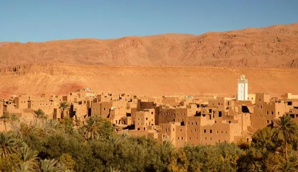
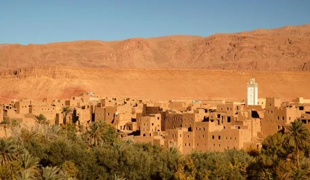

The Experience
One Magical Night in the Sahara
This is THE moment—sleeping under stars in the world's most famous desert, surrounded by dunes that shift colors from gold to crimson as the sun sets.
After our 160km drive from Todra Gorge (2.5 hours through changing landscapes), we arrive at Erg Chebbi—Morocco's highest dunes. This isn't your average camping trip: we've booked a luxury desert camp with proper beds, private bathrooms, and all the romance without roughing it.
Quick Facts
📅 Date: Wednesday, April 2, 2026
🏨 Nights: 1 (but unforgettable!)
💰 Cost: £175-195
🌡️ Weather: Perfect 24°C/75°F
🎯 Highlights: Sunset, dunes, Berber music, stars
⏰ Arrival: Afternoon (check-in ~3pm)
Our Desert Day
Sunset to Sunrise in the Sahara
🌅 Late Afternoon: Arrival & Camel Trek
Arrive at the edge of the dunes around 3-4pm. Choice of camel ride OR 4x4 transfer to camp (both included). The camel trek takes about 30-40 minutes, swaying across golden sands as the heat begins to soften.
🌄 Sunset: The Main Event
Watch the sun sink over endless dunes. The sand transforms from gold to orange to deep crimson. This is when you understand why people travel across the world for this moment. Silence. Vastness. Magic.
🍽️ Evening: Dinner Under Stars
Traditional Moroccan feast served in the camp's communal tent or under the open sky. Tagines, couscous, grilled meats, fresh salads—all prepared on-site. This is where luxury camping shines: authentic food, romantic setting, zero compromise on quality.

🎵 Night: Berber Music Around the Campfire
This is what you've been waiting for! After dinner, gather around the fire as Berber musicians play traditional songs. Drums, singing, stories passed down through generations. The music is hypnotic—rhythmic, soulful, utterly authentic.
This isn't a tourist show. These are real Berber people sharing their culture. You'll hear the bendir (frame drum), the gimbri (three-stringed bass instrument), and the metallic clang of qraqeb castanets. The stars overhead are impossibly bright—the Milky Way stretches across the sky like a river of light.

This is the cultural, musical experience you loved in Essaouira—but in the most dramatic setting imaginable.
🌙 Overnight: Sleep Under a Billion Stars
Retire to your private tent—proper bed, linens, bathroom. Fall asleep to absolute silence. No light pollution. No city sounds. Just desert stillness and stars.
🌄 Morning: Sunrise Over the Dunes
Wake before dawn (optional!) to watch sunrise paint the dunes in shades of pink and gold. Traditional Berber breakfast, then camel/4x4 back to civilization. By 9-10am, we're back on the road to N'kob.
The Magic
Why the Desert Night Matters
This is the moment the entire trip builds toward. Everything before prepares you; everything after lets you decompress. But THIS night—dunes, stars, music, silence—this is the soul of Morocco.
People who visit Morocco and skip the desert always regret it. It's not just scenery—it's a spiritual experience. The vastness humbles you. The silence centers you. The music connects you.
What Makes Our Camp Special
✨ Luxury without losing authenticity—proper beds, private bathrooms, BUT still traditional Berber tents
🎵 Real Berber musicians—not hired performers, but people from local communities
🍽️ Exceptional food—far beyond typical "camp food"
👥 Small camp—intimate, not a 50-tent tourist factory
⭐ Premium location—deep in the dunes, away from light pollution
The Journey
Getting to Merzouga
From Todra Gorge to the Desert
Leave Todra Gorge after breakfast, driving south toward the Sahara. The landscape transitions dramatically—mountains give way to rocky plains, green valleys become sparse, and suddenly you see them: golden dunes rising on the horizon.
Scenic Stops Along the Way
 


💼 What to Pack for the Desert Night
Essential: Overnight bag (leave main luggage in car), warm layer for evening (desert gets cool!), camera, headlamp/torch, sunglasses, sunscreen
Nice to have: Scarf for sand protection, extra phone battery, small backpack for sunset walk
Don't worry about: Towels, toiletries, bedding (all provided)